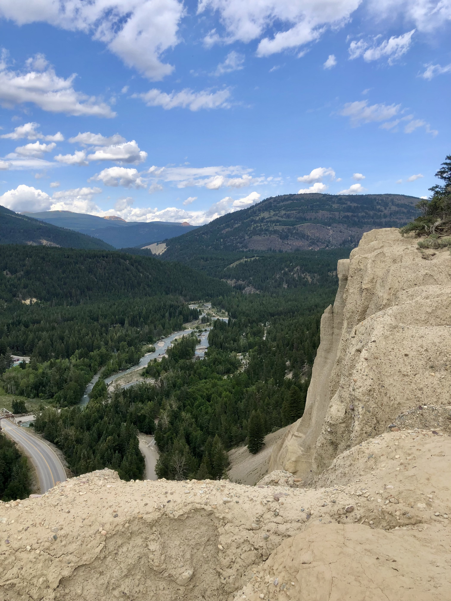
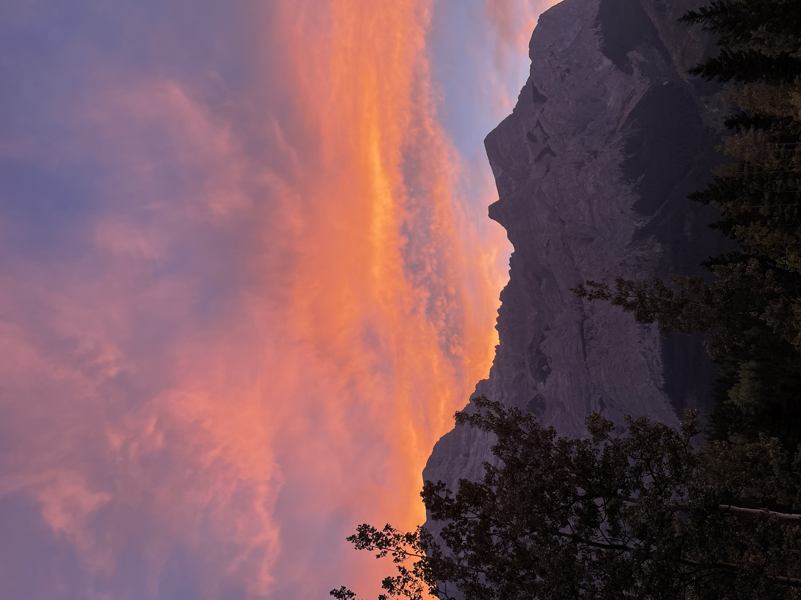

One of my favourite trips i've been on is in Invermere British Columbia. I was able to grab a few friends and stay in a cabin super close to town. It is a smaller area but with enough people you can make your own fun! One day we deicded we were going to walk up the mountain with the hoodoos. This was such a simple climb with views that were just as gorgeous. The climb up was super easy and did not take long at all. Once you are at the top, you can stand right on top of the hoodoos! It was a very cool experience especially being able see the mountains that surround Invermere. I would recommend this place to anyone just looking ot get away for a weekend. If you find the right place and a group of people, you can make your own kind of fun in a smaller town. I had a blast just being able to get away from the big city and enjoy my time out in nature.

One of my first times ever camping was in Kananaskis Alberta. The camp ground was located at the bottom of a mountain called Mount Kidd. This was right beside a golf course and it had a mini recreation center as well! I had never experienced something like this before but it was a great way to end the summer! One night, me and my friends were playing spikeball in the field. The sun started to set and eneded up being one of the most beautiful sunsets of the summer. The sky turned all shades of orange and pink. I was able to get stunning pictures of it right at the foot of the mountain! It was an experience I would never forget. I would recommend this campsite to anyone looking for a nice place to get away! Not only does it have gorgeous views but also lots of space to set up games and activites! It it a pretty safe area, the only concern would be bears in which bear spray would be essential. Overall this camping experience was one that I will never forget and I would love to go back there one day!

I never thought that I would enjoy a hike as much as I did in Canmore Alberta. I had never gone on a hike before so I knew I wanted to start with an easier one. My boyfriend suggested we did the Grassy Lake hike in Canmore and it was so much fun! Tere were two paths we could choose from, a easier paved path or a harder unpaved path. We decided to take the harder one up and the easier one down. As someone who is not used to hiking, both of these paths were super easy! It was about a 40 minute hike but the views were so worth it. It felt like we didnt go high up yet when we reached the top, we got gorgeous views of the mountains around us. There was even a waterfall next to the hiking trail. If anyone is looking for an easy hike with amazing views then this is the hike for you! It is super close to the town of Canmore where you can grab a bite to eat after the hike. Depending on the time of year, this trail tends to get pretty busy so the chances of bears or any other animals appearing are pretty slim. As someone who does not hike often, this trail was one of my absolute favourites and I would reccomend it to anyone who wants to see a good view!